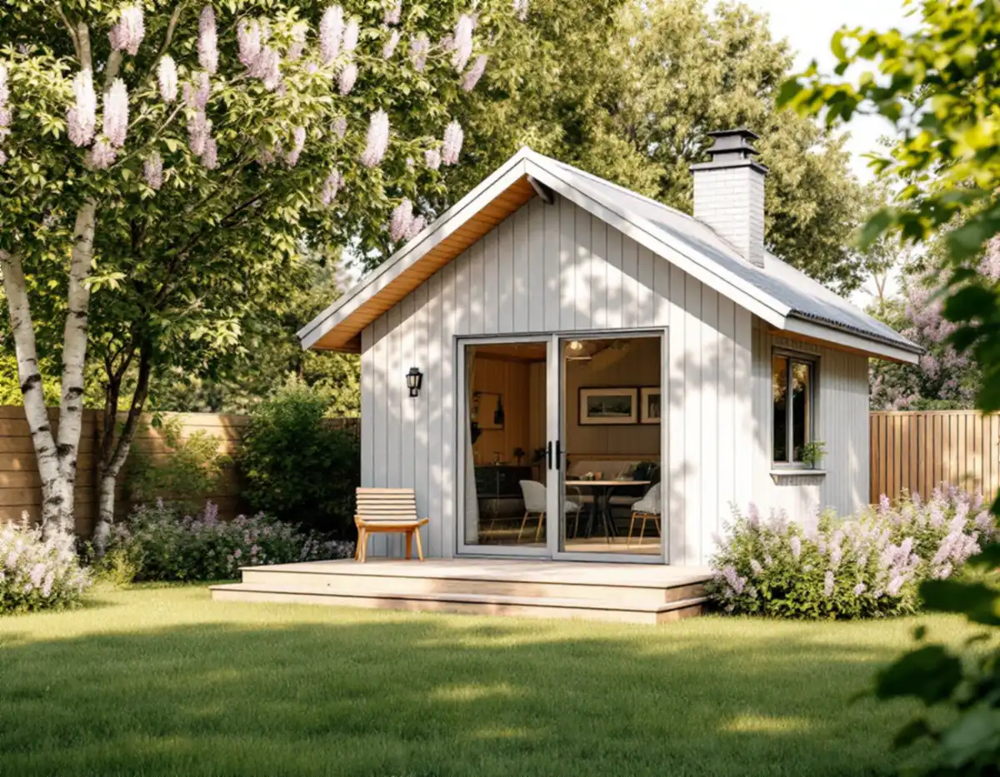

Plankartan
Vi kontrollerar Q- och q-bestämmelser, utökad lovplikt och strandskydd.
Ligger villatomten i Täby inom detaljplan kan ett attefallshus byggas utan bygglov, så länge måtten och planen tillåter det. Men planen kan innehålla skyddsbestämmelser, och installationerna för vatten och avlopp behöver i regel anmälas. Geal Entreprenad AB bygger komplementbostadshus nyckelfärdigt och tar hand om underlaget till kommunen och Roslagsvatten.

Täby kommun skriver att ett komplementbostadshus sedan den 1 december 2025 kan uppföras utan bygglov och oftast utan anmälan. Lov behövs om huset inte ryms i de lovbefriade måtten, om fastigheten har kulturhistoriska värden eller om detaljplanen har utökad lovplikt. Inom detaljplan betyder måtten högst 30,0 kvadratmeter byggnadsarea, 4,0 meter till nocken och sammanlagt 45,0 kvadratmeter lovfritt på tomten.
Kunskapsunderlaget Kulturmiljöer i Täby förklarar att skyddsbestämmelser i detaljplanen ofta betecknas med Q, q eller rivningsförbud på plankartan. Underlaget skriver också att många bygglovsbefriade åtgärder inte får utföras på byggnader eller i områden som bedöms vara särskilt värdefulla, att varsamhetskravet gäller alla byggnader och att särskilt värdefull bebyggelse inte får förvanskas. Varje fastighetsägare ansvarar själv för att kontrollera vad som gäller, så plankartan är det första vi tittar på.
Täby har två riksintressen för kulturmiljövården: Skålhamravägen (AB 71), en vägsträckning med förhistoriskt ursprung genom ett odlingslandskap med runristningar och stensträngar, och Täby prästgårdsmark (AB 73), en fornlämningsmiljö med rötter i bronsåldern. Kommunens underlag skriver att ett område av riksintresse sannolikt också är ett sådant särskilt värdefullt område som plan- och bygglagen avser.
För de flesta villaområden är riksintressena långt borta, men för gårdar och hus längs Skålhamravägen eller nära prästgården betyder det att ett nytt hus på tomten kan kräva bygglov. Underlaget beskriver också värdefulla miljöer i tätorten och äldre gårdsmiljöer, och det läser vi innan vi föreslår form, färg och placering. Vår bedömning är att ett litet hus som underordnar sig villan och följer tomtens nivåer är lättast att få in i en sådan miljö. Hör huset till ett grupphusområde tittar vi också på hur grannhusens förråd och carportar är placerade, så att det nya huset inte bryter mönstret längs gatan.
Ligger tomten nära vatten är strandskyddet nästa fråga. Täby kommun skriver att du inte behöver söka strandskyddsdispens för åtgärder på kvartersmark inom detaljplanerat område när strandskyddet har upphävts genom detaljplanen. Det gäller till exempel bostadsfastigheter, och kommunens detaljplaner visar om din fastighet ligger inom ett sådant område.
Utanför sådana planer krävs dispens för att bygga nytt, för att ändra byggnader eller deras användning och för att utöka den privata hemfridszonen. Dispens kräver särskilda skäl, och kommunen skriver att de bedöms väldigt noggrant. Till ansökan hör situationsplan, plan-, fasad- och sektionsritningar och fotografier. Vill du i stället bygga ihop ytan med villan finns tillbyggnad i Täby.
Ett hus att bo i får vatten, avlopp och ventilation, och då krävs i regel anmälan och startbesked enligt plan- och byggförordningen. Täby kommun räknar upp vad som ofta ska med: anmälan via blankett eller e-tjänst, redovisning av vatten- och avloppsanordningarna, planritning och sektionsritning och ett förslag på kontrollplan. Är arbetet mer omfattande behövs en kontrollansvarig. Ska huset hyras ut som självständig bostad söker du dessutom en ny adress hos kommunens geodataenhet.
Roslagsvatten sköter vatten och avlopp i Täby och vill ha en VA-anmälan med ritning över ledningsdragningen i god tid före byggstart. Vattenledningen kopplas efter vattenmätaren, och spillvattnet ansluts till fastighetens befintliga spillvattenledning, helst via en rensbrunn. Dag- och dräneringsvatten får inte gå till spillvattnet. Roslagsvatten varnar också för sämre vattentryck om huset ligger högre och längre bort från förbindelsepunkten. Måtten och paragraferna i stort finns i nya regler för attefallshus.
Vi kontrollerar Q- och q-bestämmelser, utökad lovplikt och strandskydd.
Huset ritas in med mått mot gränser och befintliga ledningar.
Ritning över ledningsdragningen och förslag på kontrollplan.
Till kommunen och Roslagsvatten innan byggstart.
Grund, stomme, installationer och ytskikt.
Genomgång och adress om huset ska hyras ut.
Rotavdrag gäller reparation, underhåll och om- och tillbyggnad av en befintlig bostad. Skatteverket skriver uttryckligen att det inte ges för att bygga ett helt nytt hus eller en liknande fristående byggnad på småhustomten, och ett komplementbostadshus är en sådan. Priset för huset lämnar vi därför utan rotavdrag.
Storlek och planlösning, kök och badrum, grundläggning, längden på ledningarna till villans spillvatten och vattenmätare och om en kontrollansvarig behövs. Efter ett kostnadsfritt platsbesök får du ett skriftligt kostnadsförslag.
Komplementbostadshus på tomten.
Attefallshus →Takbyte, takbesiktning och plåtarbeten.
Takläggare i Täby →Näsbypark, Viggbyholm och Gribbylund.
Takrenovering i Täby →Radhuslängor, villor och nya gästhus.
Badrumsrenovering i Täby →Tillbyggnad, gästhus och renovering.
Byggföretag i Täby →Kulör per kvarter och provytor.
Fasadmålning i Täby →Tegelvillor, kedjehus och grupphus i Täby.
Fasadrenovering i Täby →Villastäder och grupphus i Täby.
Fönsterbyte i Täby →Gårdarnas fönster, kulör och spröjs.
Fönsterrenovering i Täby →Villor, radhus och kedjehus från 1970- och 80-talen.
Golvläggare i Täby →Laga och slipa golvet efter en riven vägg.
Golvslipning i Täby →Grupphus, radhus och villor vid banan.
Köksrenovering i Täby →Trävillor, puts och kedjehus i Täby.
Målare i Täby →Stationsvillor, funkis och grupphus i Täby.
Plåtslagare i Täby →Verandor, fönster och carport.
Snickare i Täby →Betongpannor, kedjehus och tegelvillor.
Takbyte i Täby →Ny tapet mot lister och foder.
Tapetsering i Täby →Byle, kyrkbyn och detaljplanen.
Tillbyggnad i Täby →Ett hus som går att bo kvar i.
Totalrenovering i Täby →